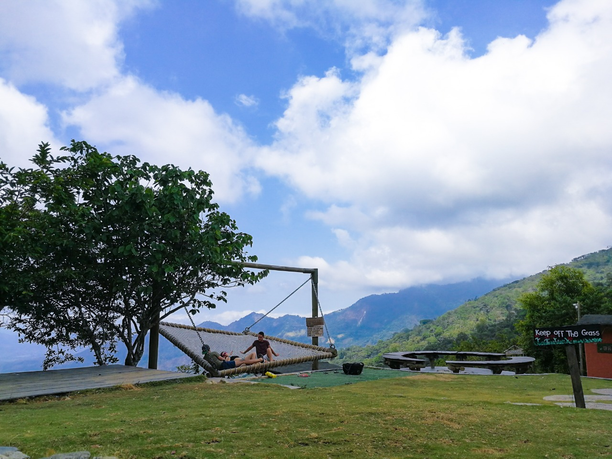
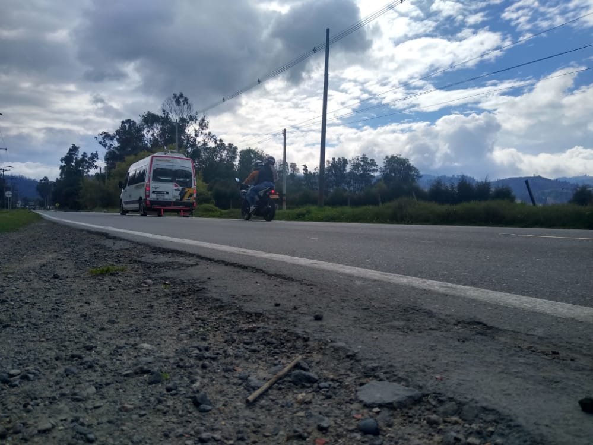

Tras la pandemia muchos lugares ecoturísticos de la
zona turística de Cundinamarca se han visto afectados
por la pandemia ya que han tenido que cerrar por varios
meses estos lugares que subsistían con el dinero que
producen, zoológico, parques, lagunas. Estas zonas que
de por si no son muy visitadas se encuentran en problemas para mantenerse, con esta idea en mente nace la
idea de Ecomapa, una plataforma virtual interactiva que
proporciona información sobre estos lugares, que actividades se pueden realizar, que costos pueden legar a
tener estos lugares, servicio de donaciones, etc. El propósito es enseñar a los jóvenes sobre el concepto de
eco-cultura y como esta se vio afectada involuntariamente por la pandemia actual.

Misión
Tras la pandemia muchos lugares ecoturísticos de la
zona turística de Cundinamarca se han visto afectados
por la pandemia ya que han tenido que cerrar por varios
meses estos lugares que subsistían con el dinero que
producen, zoológico, parques, lagunas. Estas zonas que
de por si no son muy visitadas se encuentran en problemas para mantenerse, con esta idea en mente nace la
idea de Ecomapa, una plataforma virtual interactiva que
proporciona información sobre estos lugares, que actividades se pueden realizar, que costos pueden legar a
tener estos lugares, servicio de donaciones, etc. El propósito es enseñar a los jóvenes sobre el concepto de
eco-cultura y como esta se vio afectada involuntariamente por la pandemia actual.

Visión
- Persuadir a los jóvenes a hacer recorridos ecológicos con
el fin de contribuir con el ecoturismo en Cundinamarca.
- Enseñar sobre los ecosistemas que se
encuentran en Cundinamarca, como cuidarlos y como
aportar en su desarrollo y mantenimiento.
- Ayudar, dar a conocer y aumentar las visitas de los lugares
ecoturísticos que se han visto afectados con la pandemia